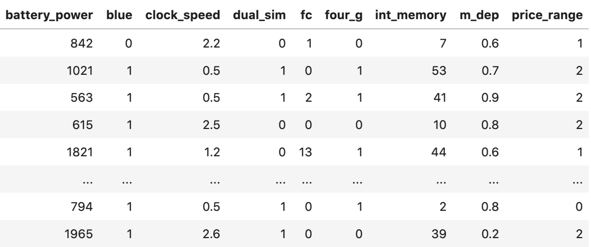
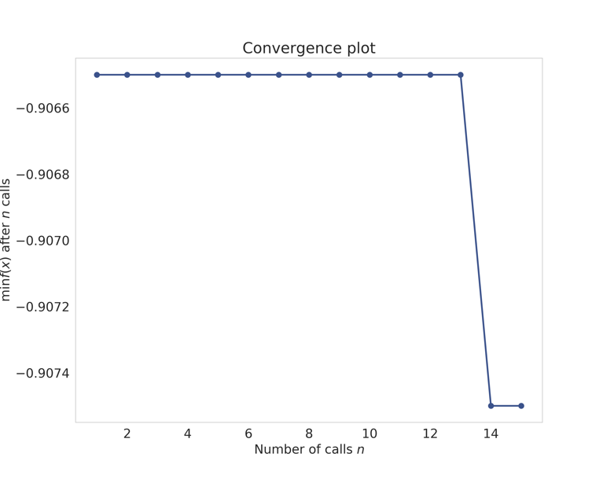

超参数优化
有了优秀的模型，就有了优化超参数以获得最佳得分模型的难题。那么，什么是超参数优化呢？假设您的机器学习项目有一个简单的流程。有一个数据集，你直接应用一个模型，然后得到结果。模型在这里的参数被称为超参数，即控制模型训练/拟合过程的参数。如果我们用 SGD 训练线性回归，模型的参数是斜率和偏差，超参数是学习率。你会发现我在本章和本书中交替使用这些术语。假设模型中有三个参数 a、b、c，所有这些参数都可以是 1 到 10 之间的整数。这些参数的 "正确 "组合将为您提供最佳结果。因此，这就有点像一个装有三拨密码锁的手提箱。不过，三拨密码锁只有一个正确答案。而模型有很多正确答案。那么，如何找到最佳参数呢？一种方法是对所有组合进行评估，看哪种组合能提高指标。让我们看看如何做到这一点。
# 初始化最佳准确度
best_accuracy = 0
# 初始化最佳参数的字典
best_parameters = {"a": 0, "b": 0, "c": 0}
# 循环遍历 a 的取值范围 1~10
for a in range(1, 11):
# 循环遍历 b 的取值范围 1~10
for b in range(1, 11):
# 循环遍历 c 的取值范围 1~10
for c in range(1, 11):
# 创建模型，使用 a、b、c 参数
model = MODEL(a, b, c)
# 使用训练数据拟合模型
model.fit(training_data)
# 使用模型对验证数据进行预测
preds = model.predict(validation_data)
# 计算预测的准确度
accuracy = metrics.accuracy_score(targets, preds)
# 如果当前准确度优于之前的最佳准确度，则更新最佳准确度和最佳参数
if accuracy > best_accuracy:
best_accuracy = accuracy
best_parameters["a"] = a
best_parameters["b"] = b
best_parameters["c"] = c
在上述代码中，我们从 1 到 10 对所有参数进行了拟合。因此，我们总共要对模型进行 1000 次（10 x 10 x 10）拟合。这可能会很昂贵，因为模型的训练需要很长时间。不过，在这种情况下应该没问题，但在现实世界中，并不是只有三个参数，每个参数也不是只有十个值。 大多数模型参数都是实数，不同参数的组合可以是无限的。
让我们看看 scikit-learn 的随机森林模型。
RandomForestClassifier(
n_estimators=100,
criterion='gini',
max_depth=None,
min_samples_split=2,
min_samples_leaf=1,
min_weight_fraction_leaf=0.0,
max_features='auto',
max_leaf_nodes=None,
min_impurity_decrease=0.0,
min_impurity_split=None,
bootstrap=True,
oob_score=False,
n_jobs=None,
random_state=None,
verbose=0,
warm_start=False,
class_weight=None,
ccp_alpha=0.0,
max_samples=None,
)
有 19 个参数，而所有这些参数的所有组合，以及它们可以承担的所有值，都将是无穷无尽的。通常情况下，我们没有足够的资源和时间来做这件事。因此，我们指定了一个参数网格。在这个网格上寻找最佳参数组合的搜索称为网格搜索。我们可以说，n_estimators 可以是 100、200、250、300、400、500；max_depth 可以是 1、2、5、7、11、15；criterion 可以是 gini 或 entropy。这些参数看起来并不多，但如果数据集过大，计算起来会耗费大量时间。我们可以像之前一样创建三个 for 循环，并在验证集上计算得分，这样就能实现网格搜索。还必须注意的是，如果要进行 k 折交叉验证，则需要更多的循环，这意味着需要更多的时间来找到完美的参数。因此，网格搜索并不流行。让我们以根据手机配置预测手机价格范围数据集为例，看看它是如何实现的。

图 1：手机配置预测手机价格范围数据集展示
训练集中只有 2000 个样本。我们可以轻松地使用分层 kfold 和准确率作为评估指标。我们将使用具有上述参数范围的随机森林模型，并在下面的示例中了解如何进行网格搜索。
# rf_grid_search.py
import numpy as np
import pandas as pd
from sklearn import ensemble
from sklearn import metrics
from sklearn import model_selection
if __name__ == "__main__":
# 读取数据
df = pd.read_csv("../input/mobile_train.csv")
# 删除 price_range 列
X = df.drop("price_range", axis=1).values
# 取目标变量 y（"price_range"列）
y = df.price_range.values
# 创建随机森林分类器，使用所有可用的 CPU 核心进行训练
classifier = ensemble.RandomForestClassifier(n_jobs=-1)
# 定义要进行网格搜索的参数网格
param_grid = {
"n_estimators": [100, 200, 250, 300, 400, 500],
"max_depth": [1, 2, 5, 7, 11, 15],
"criterion": ["gini", "entropy"]
}
# 创建 GridSearchCV 对象 model，用于在参数网格上进行网格搜索
model = model_selection.GridSearchCV(
estimator=classifier,
param_grid=param_grid,
scoring="accuracy",
verbose=10,
n_jobs=1,
cv=5
)
# 使用网格搜索对象 model 拟合数据，寻找最佳参数组合
model.fit(X, y)
# 打印出最佳模型的最佳准确度分数
print(f"Best score: {model.best_score_}")
# 打印最佳参数集合
print("Best parameters set:")
best_parameters = model.best_estimator_.get_params()
for param_name in sorted(param_grid.keys()):
print(f"\t{param_name}: {best_parameters[param_name]}")
这里打印了很多内容，让我们看看最后几行。
[CV] criterion=entropy, max_depth=15, n_estimators=500, score=0.895,
total= 1.0s
[CV] criterion=entropy, max_depth=15, n_estimators=500 ...............
[CV] criterion=entropy, max_depth=15, n_estimators=500, score=0.890,
total= 1.1s
[CV] criterion=entropy, max_depth=15, n_estimators=500 ...............
[CV] criterion=entropy, max_depth=15, n_estimators=500, score=0.910,
total= 1.1s
[CV] criterion=entropy, max_depth=15, n_estimators=500 ...............
[CV] criterion=entropy, max_depth=15, n_estimators=500, score=0.880,
total= 1.1s
[CV] criterion=entropy, max_depth=15, n_estimators=500 ...............
[CV] criterion=entropy, max_depth=15, n_estimators=500, score=0.870,
total= 1.1s
[Parallel(n_jobs=1)]: Done 360 out of 360 | elapsed: 3.7min finished
Best score: 0.889
Best parameters set:
criterion: 'entropy'
max_depth: 15
n_estimators: 500
最后，我们可以看到，5折交叉检验最佳得分是 0.889，我们的网格搜索得到了最佳参数。我们可以使用的下一个最佳方法是随机搜索。在随机搜索中，我们随机选择一个参数组合，然后计算交叉验证得分。这里消耗的时间比网格搜索少，因为我们不对所有不同的参数组合进行评估。我们选择要对模型进行多少次评估，这就决定了搜索所需的时间。代码与上面的差别不大。除 GridSearchCV 外，我们使用 RandomizedSearchCV。
if __name__ == "__main__":
classifier = ensemble.RandomForestClassifier(n_jobs=-1)
# 更改搜索空间
param_grid = {
"n_estimators": np.arange(100, 1500, 100),
"max_depth": np.arange(1, 31),
"criterion": ["gini", "entropy"]
}
# 随机参数搜索
model = model_selection.RandomizedSearchCV(
estimator=classifier,
param_distributions=param_grid,
n_iter=20,
scoring="accuracy",
verbose=10,
n_jobs=1,
cv=5
)
# 使用网格搜索对象 model 拟合数据，寻找最佳参数组合
model.fit(X, y)
print(f"Best score: {model.best_score_}")
print("Best parameters set:")
best_parameters = model.best_estimator_.get_params()
for param_name in sorted(param_grid.keys()):
print(f"\t{param_name}: {best_parameters[param_name]}")
我们更改了随机搜索的参数网格，结果似乎有了些许改进。
如果迭代次数较少，随机搜索比网格搜索更快。使用这两种方法，你可以为各种模型找到最优参数，只要它们有拟合和预测功能，这也是 scikit-learn 的标准。有时，你可能想使用管道。例如，假设我们正在处理一个多类分类问题。在这个问题中，训练数据由两列文本组成，你需要建立一个模型来预测类别。让我们假设你选择的管道是首先以半监督的方式应用 tf-idf，然后使用 SVD 和 SVM 分类器。现在的问题是，我们必须选择 SVD 的成分，还需要调整 SVM 的参数。下面的代码段展示了如何做到这一点。
import numpy as np
import pandas as pd
from sklearn import metrics
from sklearn import model_selection
from sklearn import pipeline
from sklearn.decomposition import TruncatedSVD
from sklearn.feature_extraction.text import TfidfVectorizer
from sklearn.preprocessing import StandardScaler
from sklearn.svm import SVC
# 计算加权二次 Kappa 分数
def quadratic_weighted_kappa(y_true, y_pred):
return metrics.cohen_kappa_score(
y_true,
y_pred,
weights="quadratic"
)
if __name__ == '__main__':
# 读取训练集
train = pd.read_csv('../input/train.csv')
# 从测试数据中提取 id 列的值，并将其转换为整数类型，存储在变量 idx 中
idx = test.id.values.astype(int)
# 从训练数据中删除 'id' 列
train = train.drop('id', axis=1)
# 从测试数据中删除 'id' 列
test = test.drop('id', axis=1)
# 从训练数据中提取目标变量 'relevance' ，存储在变量 y 中
y = train.relevance.values
# 将训练数据中的文本特征 'text1' 和 'text2' 合并成一个新的特征列，并存储在列表 traindata 中
traindata = list(train.apply(lambda x:'%s %s' % (x['text1'], x['text2']),axis=1))
# 将测试数据中的文本特征 'text1' 和 'text2' 合并成一个新的特征列，并存储在列表 testdata 中
testdata = list(test.apply(lambda x:'%s %s' % (x['text1'], x['text2']),axis=1))
# 创建一个 TfidfVectorizer 对象 tfv，用于将文本数据转换为 TF-IDF 特征
tfv = TfidfVectorizer(
min_df=3,
max_features=None,
strip_accents='unicode',
analyzer='word',
token_pattern=r'\w{1,}',
ngram_range=(1, 3),
use_idf=1,
smooth_idf=1,
sublinear_tf=1,
stop_words='english'
)
# 使用训练数据拟合 TfidfVectorizer，将文本特征转换为 TF-IDF 特征
tfv.fit(traindata)
# 将训练数据中的文本特征转换为 TF-IDF 特征矩阵 X
X = tfv.transform(traindata)
# 将测试数据中的文本特征转换为 TF-IDF 特征矩阵 X_test
X_test = tfv.transform(testdata)
# 创建 TruncatedSVD 对象 svd，用于进行奇异值分解
svd = TruncatedSVD()
# 创建 StandardScaler 对象 scl，用于进行特征缩放
scl = StandardScaler()
# 创建支持向量机分类器对象 svm_model
svm_model = SVC()
# 创建机器学习管道 clf，包含奇异值分解、特征缩放和支持向量机分类器
clf = pipeline.Pipeline(
[
('svd', svd),
('scl', scl),
('svm', svm_model)
]
)
# 定义要进行网格搜索的参数网格 param_grid
param_grid = {
'svd__n_components' : [200, 300],
'svm__C': [10, 12]
}
# 创建自定义的评分函数 kappa_scorer，用于评估模型性能
kappa_scorer = metrics.make_scorer(
quadratic_weighted_kappa,
greater_is_better=True
)
# 创建 GridSearchCV 对象 model，用于在参数网格上进行网格搜索，寻找最佳参数组合
model = model_selection.GridSearchCV(
estimator=clf,
param_grid=param_grid,
scoring=kappa_scorer,
verbose=10,
n_jobs=-1,
refit=True,
cv=5
)
# 使用 GridSearchCV 对象 model 拟合数据，寻找最佳参数组合
model.fit(X, y)
# 打印出最佳模型的最佳准确度分数
print("Best score: %0.3f" % model.best_score_)
# 打印最佳参数集合
print("Best parameters set:")
best_parameters = model.best_estimator_.get_params()
for param_name in sorted(param_grid.keys()):
print("\t%s: %r" % (param_name, best_parameters[param_name]))
# 获取最佳模型
best_model = model.best_estimator_
best_model.fit(X, y)
# 使用最佳模型进行预测
preds = best_model.predict(...)
这里显示的管道包括 SVD（奇异值分解）、标准缩放和 SVM（支持向量机）模型。请注意，由于没有训练数据，您无法按原样运行上述代码。当我们进入高级超参数优化技术时，我们可以使用不同类型的最小化算法来研究函数的最小化。这可以通过使用多种最小化函数来实现，如下坡单纯形算法、内尔德-梅德优化算法、使用贝叶斯技术和高斯过程寻找最优参数或使用遗传算法。我将在 "集合与堆叠（ensembling and stacking） "一章中详细介绍下坡单纯形算法和 Nelder-Mead 算法的应用。首先，让我们看看高斯过程如何用于超参数优化。这类算法需要一个可以优化的函数。大多数情况下，都是最小化这个函数，就像我们最小化损失一样。
因此，比方说，你想找到最佳参数以获得最佳准确度，显然，准确度越高越好。现在，我们不能最小化精确度，但我们可以将精确度乘以-1。这样，我们是在最小化精确度的负值，但事实上，我们是在最大化精确度。 在高斯过程中使用贝叶斯优化，可以使用 scikit-optimize (skopt) 库中的 gp_minimize 函数。让我们看看如何使用该函数调整随机森林模型的参数。
import numpy as np
import pandas as pd
from functools import partial
from sklearn import ensemble
from sklearn import metrics
from sklearn import model_selection
from skopt import gp_minimize
from skopt import space
def optimize(params, param_names, x, y):
# 将参数名称和对应的值打包成字典
params = dict(zip(param_names, params))
# 创建随机森林分类器模型，使用传入的参数配置
model = ensemble.RandomForestClassifier(**params)
# 创建 StratifiedKFold 交叉验证对象，将数据分为 5 折
kf = model_selection.StratifiedKFold(n_splits=5)
# 初始化用于存储每个折叠的准确度的列表
accuracies = []
# 循环遍历每个折叠的训练和测试数据
for idx in kf.split(X=x, y=y):
train_idx, test_idx = idx[0], idx[1]
xtrain = x[train_idx]
ytrain = y[train_idx]
xtest = x[test_idx]
ytest = y[test_idx]
# 在训练数据上拟合模型
model.fit(xtrain, ytrain)
# 使用模型对测试数据进行预测
preds = model.predict(xtest)
# 计算折叠的准确度
fold_accuracy = metrics.accuracy_score(ytest, preds)
accuracies.append(fold_accuracy)
# 返回平均准确度的负数（因为 skopt 使用负数来最小化目标函数）
return -1 * np.mean(accuracies)
if __name__ == "__main__":
# 读取数据
df = pd.read_csv("../input/mobile_train.csv")
# 取特征矩阵 X（去掉"price_range"列）
X = df.drop("price_range", axis=1).values
# 目标变量 y（"price_range"列）
y = df.price_range.values
# 定义超参数搜索空间 param_space
param_space = [
space.Integer(3, 15, name="max_depth"),
space.Integer(100, 1500, name="n_estimators"),
space.Categorical(["gini", "entropy"], name="criterion"),
space.Real(0.01, 1, prior="uniform", name="max_features")
]
# 定义超参数的名称列表 param_names
param_names = [
"max_depth",
"n_estimators",
"criterion",
"max_features"
]
# 创建函数 optimization_function，用于传递给 gp_minimize
optimization_function = partial(
optimize,
param_names=param_names,
x=X,
y=y
)
# 使用 Bayesian Optimization（基于贝叶斯优化）来搜索最佳超参数
result = gp_minimize(
optimization_function,
dimensions=param_space,
n_calls=15,
n_random_starts=10,
verbose=10
)
# 获取最佳超参数的字典
best_params = dict(
zip(
param_names,
result.x
)
)
# 打印出找到的最佳超参数
print(best_params)
这同样会产生大量输出，最后一部分如下所示。
Iteration No: 14 started. Searching for the next optimal point.
Iteration No: 14 ended. Search finished for the next optimal point.
Time taken: 4.7793
Function value obtained: -0.9075
Current minimum: -0.9075
Iteration No: 15 started. Searching for the next optimal point.
Iteration No: 15 ended. Search finished for the next optimal point.
Time taken: 49.4186
Function value obtained: -0.9075
Current minimum: -0.9075
{'max_depth': 12, 'n_estimators': 100, 'criterion': 'entropy',
'max_features': 1.0}
看来我们已经成功突破了 0.90 的准确率。这真是太神奇了！ 我们还可以通过以下代码段查看（绘制）我们是如何实现收敛的。
收敛图如图 2 所示。

图 2：随机森林参数优化的收敛图
Scikit- optimize 就是这样一个库。 hyperopt 使用树状结构贝叶斯估计器（TPE）来找到最优参数。请看下面的代码片段，我在使用 hyperopt 时对之前的代码做了最小的改动。
import numpy as np
import pandas as pd
from functools import partial
from sklearn import ensemble
from sklearn import metrics
from sklearn import model_selection
from hyperopt import hp, fmin, tpe, Trials
from hyperopt.pyll.base import scope
def optimize(params, x, y):
model = ensemble.RandomForestClassifier(**params)
kf = model_selection.StratifiedKFold(n_splits=5)
...
return -1 * np.mean(accuracies)
if __name__ == "__main__":
df = pd.read_csv("../input/mobile_train.csv")
X = df.drop("price_range", axis=1).values
y = df.price_range.values
# 定义搜索空间（整型、浮点数型、选择型）
param_space = {
"max_depth": scope.int(hp.quniform("max_depth", 1, 15, 1)),
"n_estimators": scope.int(
hp.quniform("n_estimators", 100, 1500, 1)
),
"criterion": hp.choice("criterion", ["gini", "entropy"]),
"max_features": hp.uniform("max_features", 0, 1)
}
# 包装函数
optimization_function = partial(
optimize,
x=X,
y=y
)
# 开始训练
trials = Trials()
# 最小化目标值
hopt = fmin(
fn=optimization_function,
space=param_space,
algo=tpe.suggest,
max_evals=15,
trials=trials
)
#打印最佳参数
print(hopt)
正如你所看到的，这与之前的代码并无太大区别。你必须以不同的格式定义参数空间，还需要改变实际优化部分，用 hyperopt 代替 gp_minimize。结果相当不错！
❯ python rf_hyperopt.py
100%|██████████████████| 15/15 [04:38<00:00, 18.57s/trial, best loss: -
0.9095000000000001]
{'criterion': 1, 'max_depth': 11.0, 'max_features': 0.821163568049807,
'n_estimators': 806.0}
我们得到了比以前更好的准确度和一组可以使用的参数。请注意，最终结果中的标准是 1。这意味着选择了 1，即熵。 上述调整超参数的方法是最常见的，几乎适用于所有模型：线性回归、逻辑回归、基于树的方法、梯度提升模型（如 xgboost、lightgbm），甚至神经网络！
虽然这些方法已经存在，但学习时必须从手动调整超参数开始，即手工调整。手动调整可以帮助你学习基础知识，例如，在梯度提升中，当你增加深度时，你应该降低学习率。如果使用自动工具，就无法学习到这一点。请参考下表，了解应如何调整。RS* 表示随机搜索应该更好。
一旦你能更好地手动调整参数，你甚至可能不需要任何自动超参数调整。创建大型模型或引入大量特征时，也容易造成训练数据的过度拟合。为避免过度拟合，需要在训练数据特征中引入噪声或对代价函数进行惩罚。这种惩罚称为正则化，有助于泛化模型。在线性模型中，最常见的正则化类型是 L1 和 L2。L1 也称为 Lasso 回归，L2 称为 Ridge 回归。说到神经网络，我们会使用dropout、添加增强、噪声等方法对模型进行正则化。利用超参数优化，还可以找到正确的惩罚方法。
| Model | Optimize | Range of values |
|---|---|---|
| Linear Regression | - fit_intercept - normalize |
- True/False - True/False |
| Ridge | - alpha - fit_intercept - normalize |
- 0.01, 0.1, 1.0, 10, 100 - True/False - True/False |
| k-neighbors | - n_neighbors - p |
- 2, 4, 8, 16, ... - 2, 3, ... |
| SVM | - C - gamma - class_weight |
- 0.001, 0.01, ...,10, 100, 1000 - 'auto', RS* - 'balanced', None |
| Logistic Regression | - Penalyt - C |
- L1 or L2 - 0.001, 0.01, ..., 10, ..., 100 |
| Lasso | - Alpha - Normalize |
- 0.1, 1.0, 10 - True/False |
| Random Forest | - n_estimators - max_depth - min_samples_split - min_samples_leaf - max features |
- 120, 300, 500, 800, 1200 - 5, 8, 15, 25, 30, None - 1, 2, 5, 10, 15, 100 - log2, sqrt, None |
| XGBoost | - eta - gamma - max_depth - min_child_weight - subsample - colsample_bytree - lambda - alpha |
- 0.01, 0.015, 0.025, 0.05, 0.1 - 0.05, 0.1, 0.3, 0.5, 0.7, 0.9, 1.0 - 3, 5, 7, 9, 12, 15, 17, 25 - 1, 3, 5, 7 - 0.6, 0.7, 0.8, 0.9, 1.0 - 0.6, 0.7, 0.8, 0.9, 1.0 - 0.01, 0.1, 1.0, RS - 0, 0.1, 0.5, 1.0, RS |